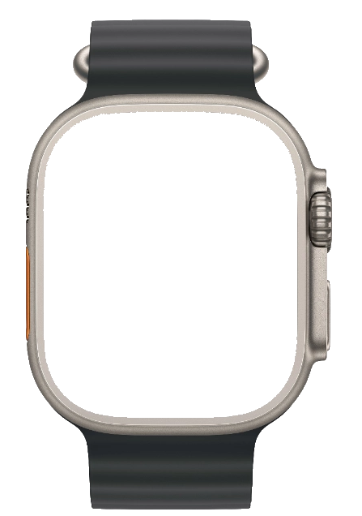

THE SCIENCE IS IN
33 minutes.
Once a week.
Exactly hard enough.
N4x4 coaches the Norwegian 4x4 with live heart rate — from Apple Watch, Garmin, WHOOP, or any Bluetooth monitor — so every interval lands in the zone that builds your VO₂ max, the fitness marker most tied to how well you age.



Apple Watch
See how it works